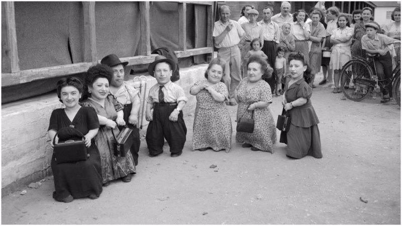
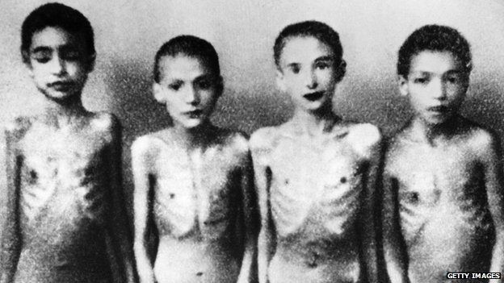
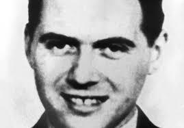

Nazi Human experimentation
German doctors performed a wide variety of experiments on prisoners at Auschwitz. SS doctors tested the efficacy of X-rays as a sterilization device by administering large
doses to female prisoners. Prof Dr Carl Clauberg injected chemicals into women's uteruses in an effort to glue them shut. Bayer, then a subsidiary of IG Farben, bought
prisoners to use as research subjects for testing new drugs. Prisoners were also deliberately infected with spotted fever for vaccination research and exposed to toxic
substances to study the effects.
The most infamous doctor at Auschwitz was Josef Mengele, known as the "Angel of Death". Particularly interested in research on identical twins, Mengele performed cruel
experiments on them, such as inducing diseases in one twin and killing the other when the first died to perform comparative autopsies. He also took a special interest in
dwarfs, and he deliberately induced noma in twins, dwarfs, and other prisoners to study the effects.
Kurt Heissmeyer took twenty Jewish children from Auschwitz to use in pseudoscientific medical experiments at the Neuengamme concentration camp. In April 1945, the
children were killed by hanging to conceal the project.
A skeleton collection was obtained from among a pool of 115 Jewish Auschwitz inmates, chosen for their perceived stereotypical racial characteristics. Rudolf Brandt and
Wolfram Sievers, general manager of the Ahnenerbe (a Nazi research institute), were responsible for delivering the skeletons to the collection of the Anatomy Institute at
the Reich University of Strasbourg in the Alsace region of Occupied France. The collection was sanctioned by Himmler and under the direction of August Hirt. Ultimately 87
of the inmates were shipped to Natzweiler-Struthof and killed in August 1943. Brandt and Sievers were later convicted in the Doctors' Trial in Nuremberg.


